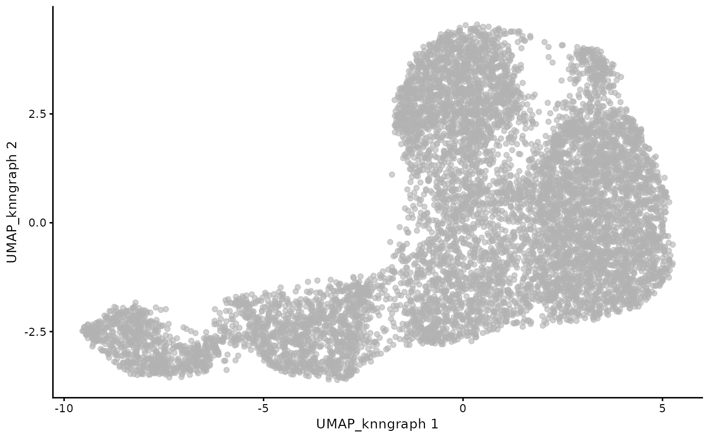

milo_umap.Rduse function RunUMAP from Seurat to conduct the umap on the adjacency matrix of knn graph in milo object
milo_umap(
milo,
slot_name = "UMAP_knngraph",
n.neighbors = 50L,
metric = "euclidean"
)the milo object with knn graph that needed to conduct umap on.
character, with default 'UMAP_knngraph'.
The slot name in reduceDim where the result store
integer, with default 50L.
the number of neighboring points used
parameter of RunUMAP, checking its document for further detail
character, with default 'euclidean'
the choice of metric used to measure distance
parameter of RunUMAP, checking its document for further detail
milo object with umap reduction
sce_vdj <- setup_vdj_pseudobulk(sce_vdj,
already.productive = FALSE)
#> Checking productivity from productive_abT_VDJ, productive_abT_VJ ...
#> 23270 of cells filtered
#> checking allowed chain status...
#> 4 of cells filtered
#> Extract main TCR from v_call_abT_VDJ, d_call_abT_VDJ, j_call_abT_VDJ, v_call_abT_VJ, j_call_abT_VJ ...
#> Complete.
#> Filtering cells from v_call_abT_VDJ_main, j_call_abT_VDJ_main, v_call_abT_VJ_main, j_call_abT_VJ_main ...
#> 202 of cells filtered
#> 8524 of cells remain.
# Build Milo Object
traj_milo <- miloR::Milo(sce_vdj)
milo_object <- miloR::buildGraph(traj_milo, k = 50, d = 20, reduced.dim = "X_scvi")
#> Constructing kNN graph with k:50
milo_object <- miloR::makeNhoods(milo_object, reduced_dims = "X_scvi", d = 20)
#> Checking valid object
#> Running refined sampling with reduced_dim
# Construct UMAP on Milo Neighbor Graph
milo_object <- milo_umap(milo_object)
#> Loading required namespace: Seurat
#> Warning: The default method for RunUMAP has changed from calling Python UMAP via reticulate to the R-native UWOT using the cosine metric
#> To use Python UMAP via reticulate, set umap.method to 'umap-learn' and metric to 'correlation'
#> This message will be shown once per session
#> 02:44:19 UMAP embedding parameters a = 0.9922 b = 1.112
#> 02:44:19 Read 8524 rows of sparse distance matrix
#> 02:44:19 Finding nearest neighbors from sparse matrix
#> 02:44:26 Commencing smooth kNN distance calibration using 1 thread
#> with target n_neighbors = 50
#> 02:44:26 8524 smooth knn distance failures
#> 02:44:28 Initializing from normalized Laplacian + noise (using RSpectra)
#> 02:44:28 Commencing optimization for 500 epochs, with 544394 positive edges
#> 02:45:23 Optimization finished
#> Warning: No assay specified, setting assay as RNA by default.
# load denpendency
library(miloR)
#> Loading required package: edgeR
#> Loading required package: limma
# load example data
data(sce_vdj)
# get milo object with knn graph
sce_vdj <- setup_vdj_pseudobulk(sce_vdj, already.productive = FALSE)
#> Checking productivity from productive_abT_VDJ, productive_abT_VJ ...
#> 0 of cells filtered
#> checking allowed chain status...
#> 0 of cells filtered
#> Filtering cells from v_call_abT_VDJ_main, j_call_abT_VDJ_main, v_call_abT_VJ_main, j_call_abT_VJ_main ...
#> 0 of cells filtered
#> 8524 of cells remain.
traj_milo <- Milo(sce_vdj)
milo <- buildGraph(traj_milo, k = 50, d = 20, reduced.dim = "X_scvi")
#> Constructing kNN graph with k:50
milo <- makeNhoods(milo, reduced_dims = "X_scvi", d = 20)
#> Checking valid object
#> Running refined sampling with reduced_dim
# Construct UMAP
milo <- milo_umap(milo, n.neighbors = 10L, metric = "euclidean")
#> 02:45:26 UMAP embedding parameters a = 0.9922 b = 1.112
#> 02:45:26 Read 8524 rows of sparse distance matrix
#> 02:45:26 Finding nearest neighbors from sparse matrix
#> 02:45:33 Commencing smooth kNN distance calibration using 1 thread
#> with target n_neighbors = 10
#> 02:45:33 8524 smooth knn distance failures
#> 02:45:34 Initializing from normalized Laplacian + noise (using RSpectra)
#> 02:45:34 Commencing optimization for 500 epochs, with 143212 positive edges
#> 02:45:49 Optimization finished
#> Warning: No assay specified, setting assay as RNA by default.
# visualize the result
scater::plotUMAP(milo,dimred = "UMAP_knngraph")
